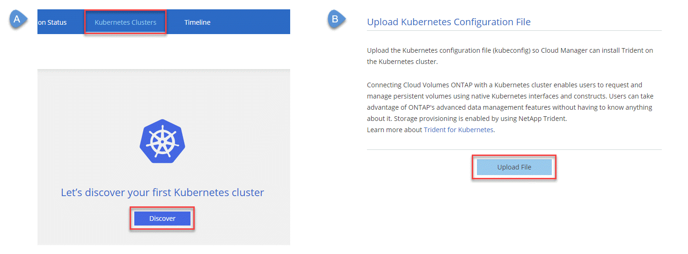
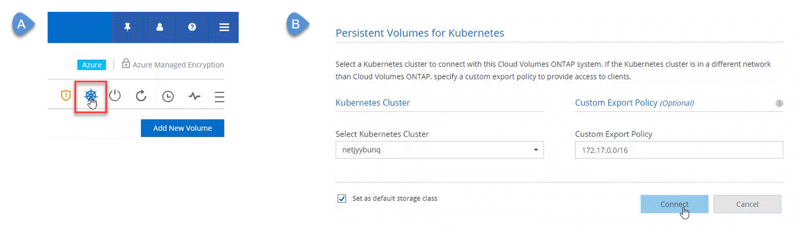

Release notes
Release notes
Using Cloud Volumes ONTAP as persistent storage for Kubernetes
 Suggest changes
Suggest changes
Cloud Manager can automate the deployment of NetApp Trident on Kubernetes clusters so you can use Cloud Volumes ONTAP as persistent storage for containers. Getting started includes a few steps.
If you deploy Kubernetes clusters using the NetApp Kubernetes Service, Cloud Manager can automatically discover the clusters from your NetApp Cloud Central account. If that's the case, skip the first two steps and start with step 3.
Verify network connectivity
-
A network connection must be available between Cloud Manager and the Kubernetes clusters, and from the Kubernetes clusters to Cloud Volumes ONTAP systems.
-
Cloud Manager needs an outbound internet connection to access the following endpoints when installing Trident:
https://packages.cloud.google.com/yum
https://github.com/NetApp/trident/releases/download/Cloud Manager installs Trident on a Kubernetes cluster when you connect a working environment to the cluster.
 Upload Kubernetes configuration files to Cloud Manager
Upload Kubernetes configuration files to Cloud Manager
For each Kubernetes cluster, the Cloud Manager Admin needs to upload a configuration file (kubeconfig) that is in YAML format. After you upload the file, Cloud Manager verifies connectivity to the cluster and saves an encrypted copy of the kubeconfig file.
Click Kubernetes Clusters > Discover > Upload File and select the kubeconfig file.

 Connect your working environments to Kubernetes clusters
Connect your working environments to Kubernetes clusters
From the working environment, click the Kubernetes icon and follow the prompts. You can connect different clusters to different Cloud Volumes ONTAP systems and multiple clusters to the same Cloud Volumes ONTAP system.
You have the option to set the NetApp storage class as the default storage class for the Kubernetes cluster. When a user creates a persistent volume, the Kubernetes cluster can use connected Cloud Volumes ONTAP systems as the backend storage by default.

 Start provisioning Persistent Volumes
Start provisioning Persistent Volumes
Request and manage Persistent Volumes using native Kubernetes interfaces and constructs. Cloud Manager creates two Kubernetes storage classes that you can use when provisioning Persistent Volumes:
-
netapp-file: for binding Persistent Volumes to single-node Cloud Volumes ONTAP systems
-
netapp-file-redundant: for binding Persistent Volumes to Cloud Volumes ONTAP HA pairs
Cloud Manager configures Trident to use the following provisioning options by default:
-
Thin volumes
-
The default Snapshot policy
-
Accessible Snapshot directory